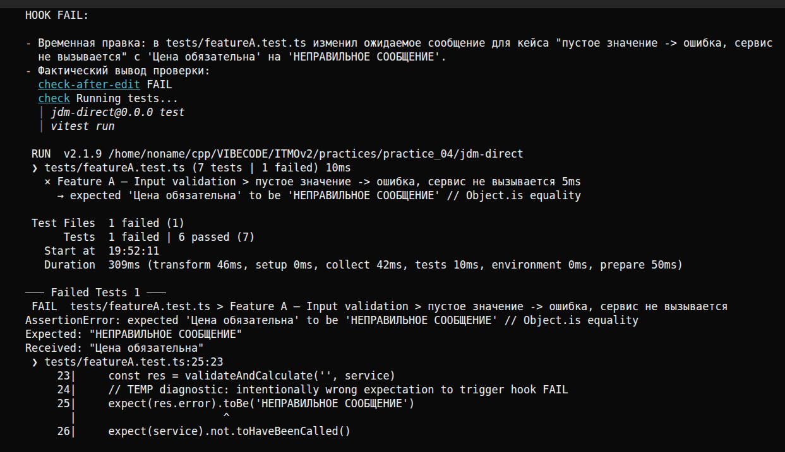
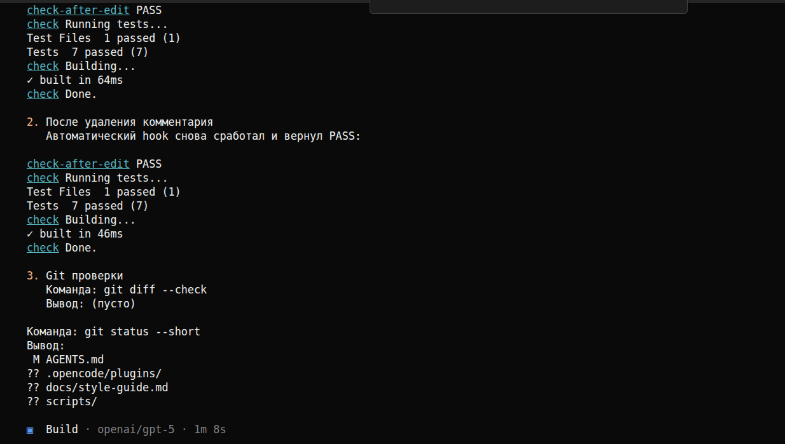
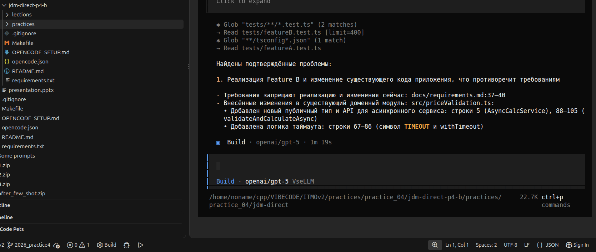
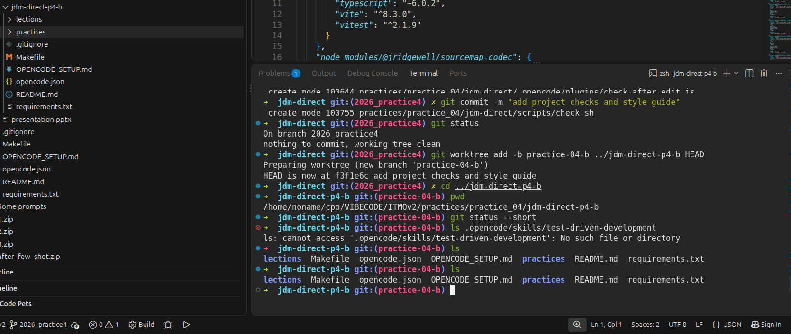
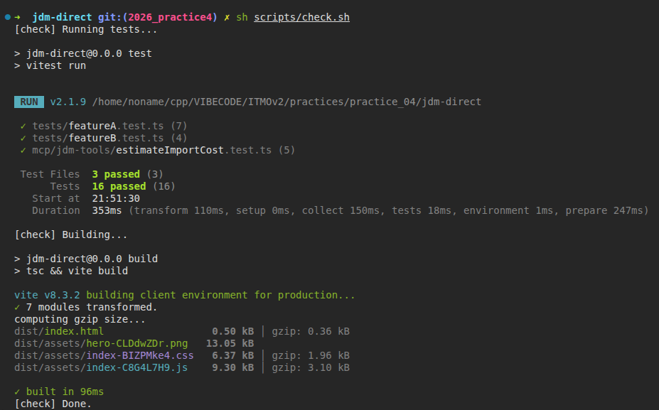
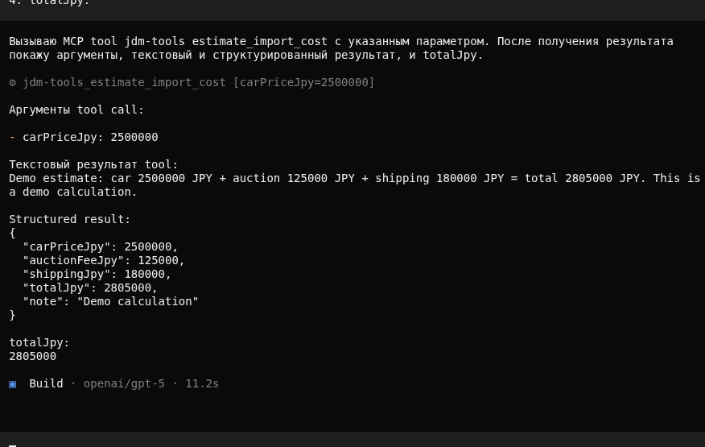
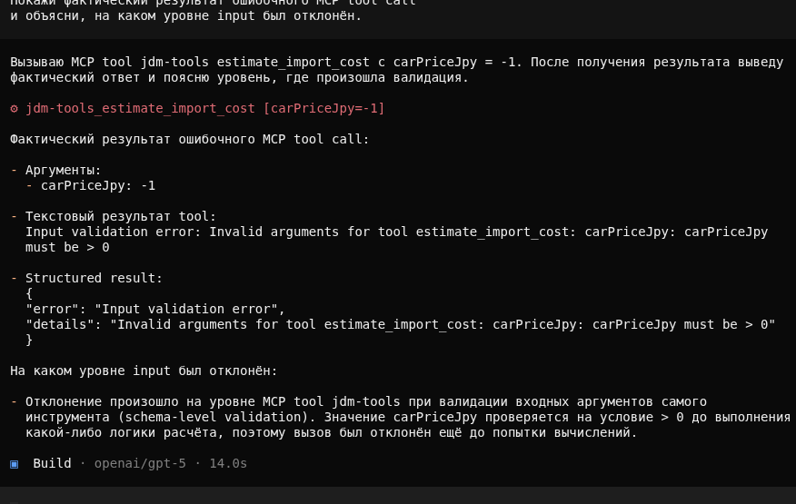

Feature A — Input validation
- цена обязательна;
- число > 0;
- максимум 100000000 JPY;
- при невалидном вводе сервис не вызывается.
Feature B — Dependency error handling
- async сервис расчёта;
- timeout ожидания;
- dependency error;
- success/error отображаются пользователю;
- поведение A сохранено.
Rubric Coverage
- AGENTS.md
- Skill
- MCP
- Hook
- Обоснование подключений
- устройство skill
- реальный запуск и проверенный результат
- полезный tool
- успешный вызов
- ошибочный input
- конкретные наблюдения
Показано покрытие критериев рубрики, а не выставленная оценка.
Environment — 5 Points
AGENTS.md
- контракт: docs/requirements.md;
- style guide;
- полная проверка через scripts/check.sh;
- запрет менять requirements / ослаблять проверки / commit без поручения.
Skill
- test-driven-development;
- локально: .opencode/skills/test-driven-development/;
- реально читались SKILL.md и writing-good-tests.md.
Context7 MCP
- подключён в opencode.json;
- применён для Vitest и MCP TypeScript SDK.
Hook
- check-after-edit — автоматически запускает sh scripts/check.sh;
- реально был проверен через FAIL → PASS.


Обоснование
- AGENTS.md держит дисциплину: не менять требования и не ослаблять проверки.
- TDD skill фиксирует порядок действий: сначала RED, потом минимальный GREEN.
- Context7 MCP ускоряет проверку API внешних библиотек.
- Hook даёт быстрый фидбек на каждое изменение.
Feature A + TDD
- тесты написаны до реализации;
- 5 из 7 тестов упали;
- падение связано с отсутствующей валидацией.
- после реализации: 7 / 7 passed.
Граница
- 100000000 JPY — допустимо;
- 100000001 JPY — ошибка.
Блокировка сервиса
При невалидном input сервис расчёта не вызывается.
Feature B + Review
- добавлены 4 новых теста;
- они упали из-за отсутствующей validateAndCalculateAsync;
- все 7 тестов Feature A оставались зелёными.
- после реализации: 11 / 11 passed.
Review found a real gap
Первая реализация Feature B проходила unit tests, но success / timeout / dependency error не были подключены к UI. Отдельный reviewer обнаружил это, замечание принято, UI исправлен. Повторный review подтвердил соответствие требованиям.

Отдельный worktree
Feature B делалась отдельно через git worktree.

Final Project Check
Команда проверки: sh scripts/check.sh
- Feature A tests проходят;
- Feature B tests проходят;
- MCP unit tests проходят;
- всего после добавления MCP: 16 / 16 tests passed;
- production build проходит.

Skill Research — 2 Points
Краткий разбор
- цикл: RED → GREEN → REFACTOR;
- Feature A: RED 5/7 failed → GREEN 7/7;
- Feature B: 4 новых теста failed, A 7/7 остаётся green;
- после реализации: 11/11 green;
- ограничение: unit TDD не гарантировал observable UI behavior (проявилось в первой версии Feature B).
Custom MCP — 2 Points
jdm-tools / estimate_import_cost
Назначение: демонстрационная оценка стоимости покупки и доставки JDM автомобиля. Расчёт демонстрационный, не реальный таможенный калькулятор.
Формула
- auctionFeeJpy = max(round(carPriceJpy * 0.05), 50000)
- shippingJpy = 180000
- totalJpy = carPriceJpy + auctionFeeJpy + shippingJpy
Successful tool call
Input: carPriceJpy = 2500000 Result: carPriceJpy = 2500000 auctionFeeJpy = 125000 shippingJpy = 180000 totalJpy = 2805000
Error call
Input: carPriceJpy = -1 Result: Input validation error: carPriceJpy must be > 0
Валидация на границе MCP schema отклоняет невалидный input до выполнения расчёта.
Код: server.ts · estimateImportCost.ts · estimateImportCost.test.ts


Handoff / New Session
- после merge создан docs/HANDOFF.md;
- новая сессия восстановила состояние A и B;
- перечислила настроенную среду и команду sh scripts/check.sh;
- самостоятельно запустила полную проверку.
Reflection — 1 Point
Что помогло
- AGENTS + TDD + hook;
- Context7;
- reviewer;
- HANDOFF.
Где пришлось вмешаться
- несовпадение OpenCode CLI с командами презентации;
- временная инструкция «не реализуй A/B» осталась в requirements;
- reviewer обнаружил отсутствие UI‑интеграции Feature B;
- worktree в монорепозитории создавал копию всего repo.
Что изменил бы
- заранее сверил версии CLI;
- лучше организовал worktree;
- раньше добавил бы browser/E2E проверки UI.
Artifacts
- ../AGENTS.md
- ../docs/requirements.md
- ../docs/style-guide.md
- ../docs/HANDOFF.md
- ../docs/skill-research.md
- ../reflection.md
- ../scripts/check.sh
- ../opencode.json
- ../.opencode/skills/test-driven-development/SKILL.md
- ../.opencode/plugins/check-after-edit.js
- ../mcp/jdm-tools/server.ts
- ../mcp/jdm-tools/estimateImportCost.ts
- ../mcp/jdm-tools/estimateImportCost.test.ts